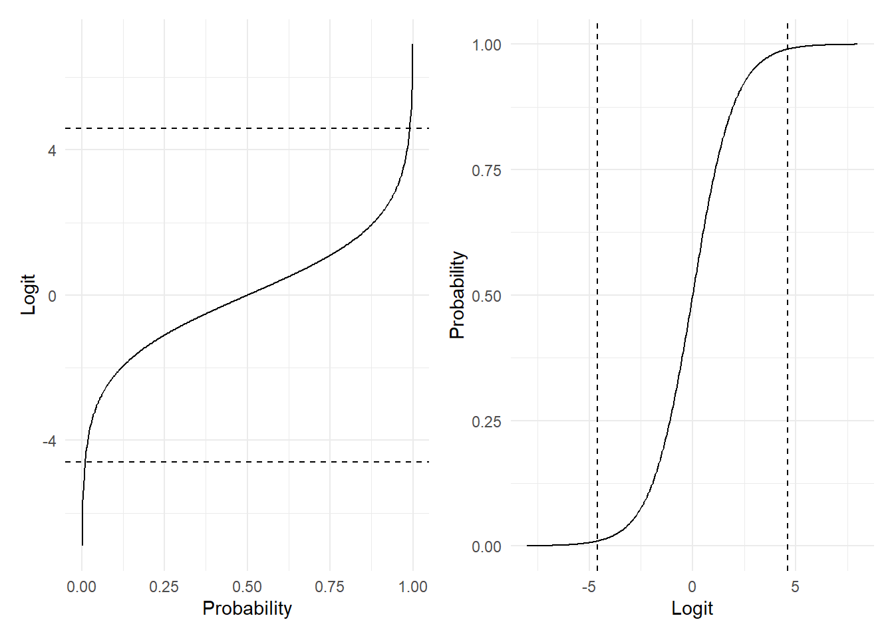
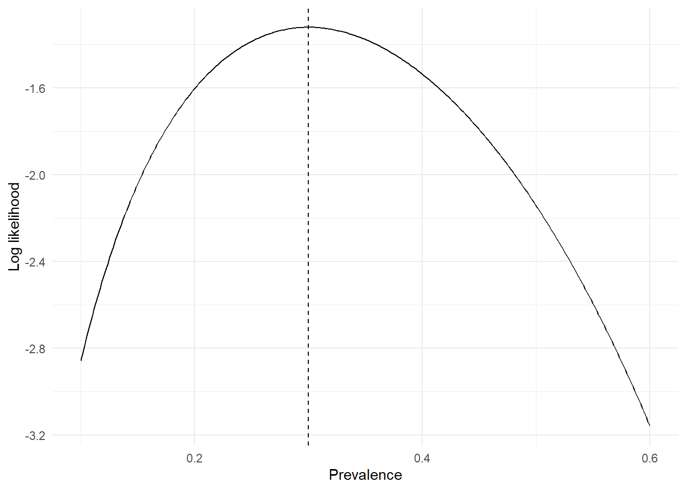
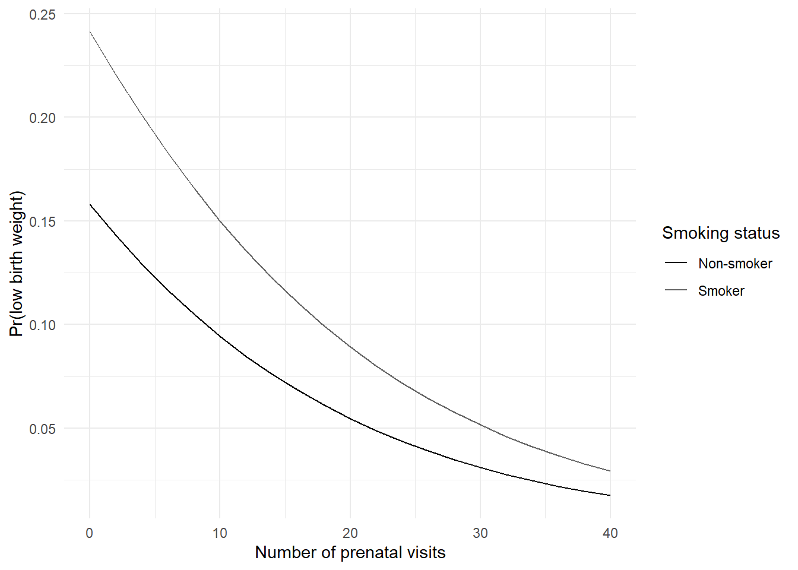
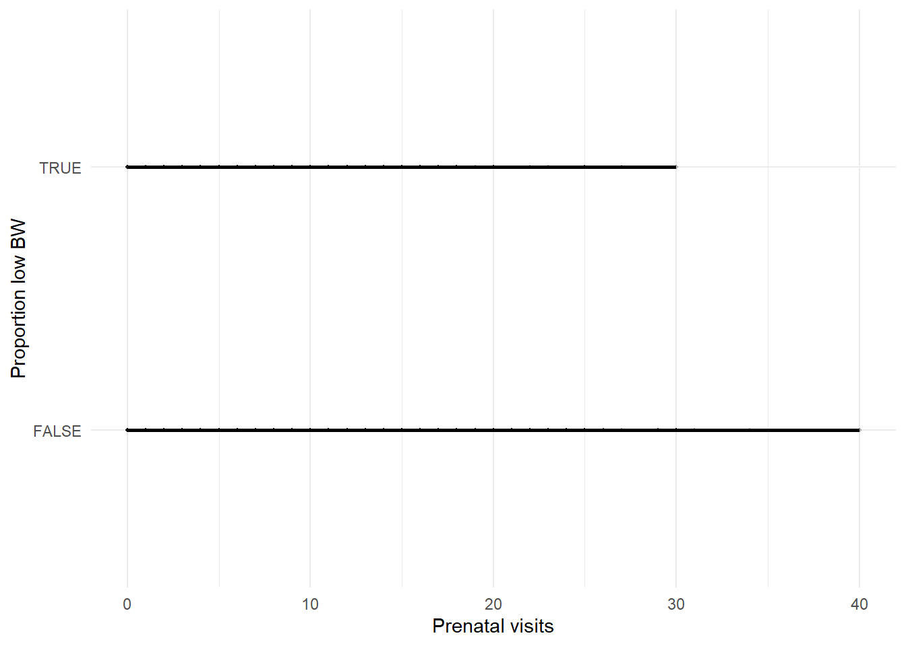
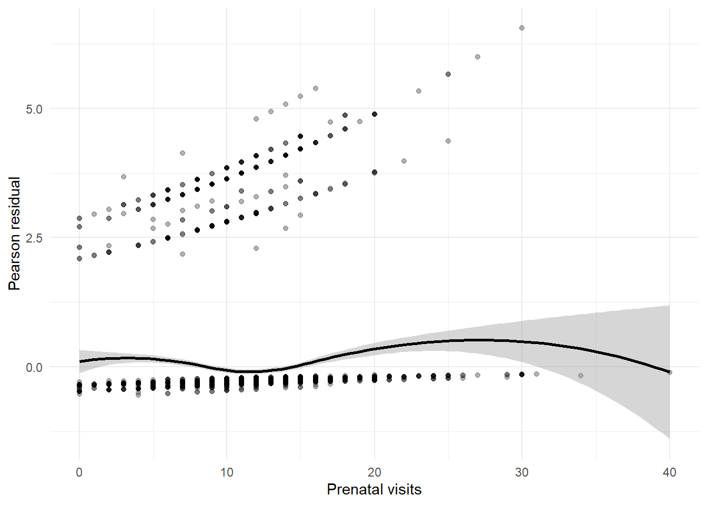
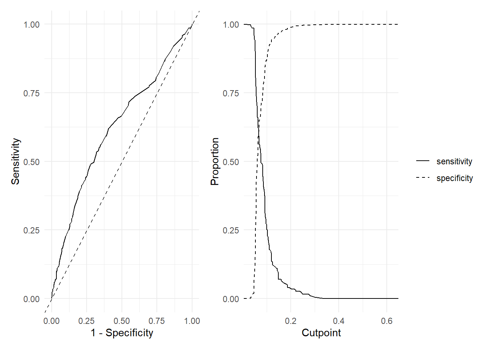
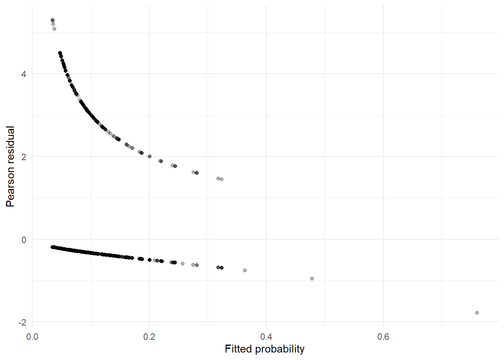

library(dplyr)
library(tidyr)
library(haven)
library(forcats)
library(ggplot2)
library(broom)
library(purrr)
library(glue)
library(marginaleffects)
library(ResourceSelection)
library(pscl)
library(pROC)
library(sandwich)
library(lmtest)
library(performance)
library(MASS)
library(survival)
library(logistf)
library(emmeans)
data_dir <- file.path("..", "mer_data_stata")
bw5k <- read_dta(file.path(data_dir, "bw5k.dta")) |>
mutate(across(where(haven::is.labelled), haven::as_factor))
low_bw <- bw5k |>
mutate(
low_bw = if_else(!is.na(bwt), bwt < 2500, NA),
white = if_else(mrace_c3 == "white", 1, 0, missing = NA_real_),
smk = if_else(cig_2 > 0, 1, 0, missing = NA_real_),
frace_c3 = frace_c3 |>
fct_drop() |>
fct_relevel("white")
)
low_bw <- low_bw[, c("low_bw", "white", "smk", "frace_c3", "previs", setdiff(names(low_bw), c("low_bw", "white", "smk", "frace_c3", "previs")))]
low_bw <- tidyr::drop_na(low_bw, low_bw, white, smk, frace_c3, previs)
write_dta(low_bw, file.path(data_dir, "low_bw.dta"))12 SME Chapter 11: Logistic Regression
Note
This chapter reproduces and expands upon the analyses from the original Methods in Epidemiologic Research (MER) Chapter 16 (Dohoo, Martin, & Stryhn, 2012) using R with data sourced from ../mer_data_stata/. The chapter covers logistic regression - the fundamental method for analyzing binary outcomes in epidemiology.
12.1 Replication Notes
- Data dependencies:
../mer_data_stata/bw5k.dta,../mer_data_stata/salm_outbrk.dta. - Required R packages:
dplyr,tidyr,haven,forcats,ggplot2,broom,purrr,glue,marginaleffects,ResourceSelection,pscl,pROC,sandwich,lmtest,performance,MASS,survival,logistf,emmeans,DHARMa. - Setup tips: Install with
install.packages(c("dplyr","tidyr","haven","forcats","ggplot2","broom","purrr","glue","marginaleffects","ResourceSelection","pscl","pROC","sandwich","lmtest","performance","MASS","survival","logistf","emmeans","DHARMa")). - Execution: Knit or run interactively; parameter estimates, diagnostics, and prediction tables are regenerated from the raw datasets.
12.2 Theoretical Background
Understanding Logistic Regression
Before we analyze binary outcomes, let’s understand why we need special methods and how logistic regression works. Logistic regression is essential for analyzing binary outcomes (yes/no, disease/no disease) in epidemiology (Dohoo, Martin, & Stryhn, 2012; Kirkwood & Sterne, 2003; Rothman, Huybrechts, & Murray, 2024):
12.2.1 Why Not Regular Regression?
Regular (linear) regression works great for continuous outcomes (like birth weight in grams). But what if your outcome is yes/no? Like “low birth weight: yes or no?”
The problem: Linear regression can predict values outside 0-1 (like predicting -0.2 or 1.5 for a probability). That doesn’t make sense! Probabilities must be between 0 and 1.
The solution: Logistic regression uses a special transformation (the logit) that keeps predictions between 0 and 1.
12.2.2 The Logit Transformation
The logit transforms probabilities (0 to 1) into log-odds (any number). Think of it like stretching a rubber band: - Probability 0.5 → logit = 0 (neutral) - Probability 0.9 → logit = positive (high probability) - Probability 0.1 → logit = negative (low probability)
Then we do regression on the logit scale, and transform back to probabilities.
12.2.3 Key Concepts
12.2.4 1. Odds and Log-Odds
Odds: The ratio of probability to (1 - probability). Like “3 to 1 odds” means 3 times more likely to happen than not.
Log-odds (logit): The natural log of odds. This is what we model in logistic regression.
12.2.5 2. Odds Ratios
In logistic regression, coefficients are interpreted as odds ratios: - OR = 1: No effect (exposure doesn’t change odds) - OR = 2: Exposure doubles the odds - OR = 0.5: Exposure halves the odds (protective)
12.2.6 3. Maximum Likelihood
Logistic regression uses maximum likelihood to find the best model. It finds the coefficients that make the observed data most likely. Think of it like finding the model that best explains what you actually saw.
12.2.7 Why Logistic Regression?
Logistic regression is perfect for: - Binary outcomes: Yes/no, disease/no disease, success/failure - Predicting probabilities: “What’s the probability this person has the disease?” - Understanding risk factors: “Which factors increase the risk?”
12.2.8 Model Assumptions
Logistic regression assumes: - Linearity on logit scale: The relationship is linear when transformed - Independence: Observations are independent - No perfect separation: You can’t perfectly predict the outcome from predictors
12.2.9 Interpreting Results
- Coefficients: Show how predictors affect log-odds
- Odds ratios: More intuitive - show how predictors affect odds
- P-values: Tell us if effects are statistically significant
- Confidence intervals: Show the range of plausible values
In simple terms: Logistic regression is like regular regression, but designed for yes/no outcomes. It uses a special transformation (logit) to keep predictions as probabilities (0-1). It tells us what factors predict binary outcomes and by how much. It’s the go-to method for analyzing disease/no disease, success/failure, and other binary outcomes.
12.3 Setup
What is this section doing?
This section prepares data for logistic regression analysis. Think of it like getting ready to predict yes/no outcomes:
- Loading libraries: Getting tools for logistic regression and diagnostics
- Reading data: Opening the birth weight dataset
- Creating binary outcome: Converting birth weight into “low birth weight: yes or no?” (like creating a pass/fail category)
- Data cleaning: Removing incomplete records and organizing variables
In simple terms: We’re preparing to answer questions like “what factors predict low birth weight?” Logistic regression is perfect for yes/no outcomes, unlike regular regression which works for continuous numbers.
12.4 Logit and Inverse Logit Functions (Figure 16.1)
What is this section doing?
This section shows the mathematical functions used in logistic regression. Think of it like showing the tools we use to convert probabilities:
- Logit function: Converts probabilities (0 to 1) into log-odds (can be any number) - like stretching a rubber band
- Inverse logit: Converts log-odds back into probabilities - like compressing it back
- Why we need this: Probabilities are bounded (0-1), but we need unbounded numbers for regression. Logit transforms probabilities into a scale that works better for modeling.
In simple terms: We’re showing the mathematical “translator” that converts between probabilities (like “30% chance”) and log-odds (like “-0.85”), which is what logistic regression uses internally.
prob_grid <- tibble(prob = seq(0.001, 0.999, length.out = 400))
logit_plot <- ggplot(prob_grid, aes(x = prob, y = log(prob / (1 - prob)))) +
geom_line(colour = "black") +
geom_hline(yintercept = c(-4.595, 4.595), linetype = "dashed") +
labs(x = "Probability", y = "Logit") +
theme_minimal()
logit_grid <- tibble(logit = seq(-8, 8, length.out = 400))
invlogit_plot <- ggplot(logit_grid, aes(x = logit, y = plogis(logit))) +
geom_line(colour = "black") +
geom_vline(xintercept = c(-4.595, 4.595), linetype = "dashed") +
labs(x = "Logit", y = "Probability") +
theme_minimal()
patchwork::wrap_plots(logit_plot, invlogit_plot, ncol = 2)
12.5 Log Likelihood Function (Figure 16.2)
ll_grid <- tibble(p = seq(0.1, 0.6, length.out = 300)) |>
mutate(
loglik = log(choose(10, 3)) + 3 * log(p) + 7 * log(1 - p)
)
ggplot(ll_grid, aes(x = p, y = loglik)) +
geom_line(colour = "black") +
geom_vline(xintercept = 0.3, linetype = "dashed") +
labs(x = "Prevalence", y = "Log likelihood") +
theme_minimal()
12.6 Exercises 16.1–16.2: Logistic Models and Likelihood-Ratio Tests
What is this section doing?
This section fits logistic regression models and compares them. Think of it like building and comparing different prediction models:
- Fitting models: Creating models that predict low birth weight from various factors (like smoking, race, prenatal visits)
- Likelihood-ratio tests: Comparing models to see if adding variables significantly improves predictions (like asking “does adding smoking status make the model better?”)
- Odds ratios: Interpreting results - how much more/less likely is low birth weight with each factor?
In simple terms: We’re building models to predict low birth weight and testing whether each factor (like smoking) actually matters. The likelihood-ratio test tells us if a model with more variables is significantly better than a simpler one.
model_null <- glm(low_bw ~ 1, data = low_bw, family = binomial())
model_reduced <- glm(low_bw ~ smk, data = low_bw, family = binomial())
model_full <- glm(low_bw ~ smk + white + frace_c3, data = low_bw, family = binomial())
anova(model_null, model_full, test = "Chisq")Analysis of Deviance Table
Model 1: low_bw ~ 1
Model 2: low_bw ~ smk + white + frace_c3
Resid. Df Resid. Dev Df Deviance Pr(>Chi)
1 4999 2643.7
2 4995 2617.2 4 26.475 2.538e-05 ***
---
Signif. codes: 0 '***' 0.001 '**' 0.01 '*' 0.05 '.' 0.1 ' ' 1anova(model_reduced, model_full, test = "Chisq")Analysis of Deviance Table
Model 1: low_bw ~ smk
Model 2: low_bw ~ smk + white + frace_c3
Resid. Df Resid. Dev Df Deviance Pr(>Chi)
1 4998 2636.1
2 4995 2617.2 3 18.834 0.0002959 ***
---
Signif. codes: 0 '***' 0.001 '**' 0.01 '*' 0.05 '.' 0.1 ' ' 1tidy(model_full, exponentiate = TRUE, conf.int = TRUE)# A tibble: 5 × 7
term estimate std.error statistic p.value conf.low conf.high
<chr> <dbl> <dbl> <dbl> <dbl> <dbl> <dbl>
1 (Intercept) 0.0983 0.175 -13.3 2.95e-40 0.0694 0.138
2 smk 1.74 0.182 3.03 2.46e- 3 1.20 2.46
3 white 0.710 0.179 -1.92 5.54e- 2 0.501 1.01
4 frace_c3hisp 0.665 0.200 -2.04 4.12e- 2 0.449 0.983
5 frace_c3black 1.25 0.192 1.17 2.42e- 1 0.858 1.82 car::Anova(model_full, type = "III", test = "Wald")Analysis of Deviance Table (Type III tests)
Response: low_bw
Df Chisq Pr(>Chisq)
(Intercept) 1 176.4052 < 2.2e-16 ***
smk 1 9.1679 0.0024630 **
white 1 3.6690 0.0554329 .
frace_c3 2 14.9627 0.0005635 ***
---
Signif. codes: 0 '***' 0.001 '**' 0.01 '*' 0.05 '.' 0.1 ' ' 1model_extended <- glm(low_bw ~ smk + white + frace_c3 + previs, data = low_bw, family = binomial())
tidy(model_extended, exponentiate = TRUE, conf.int = TRUE)# A tibble: 6 × 7
term estimate std.error statistic p.value conf.low conf.high
<chr> <dbl> <dbl> <dbl> <dbl> <dbl> <dbl>
1 (Intercept) 0.188 0.235 -7.11 1.17e-12 0.118 0.296
2 smk 1.69 0.183 2.88 3.96e- 3 1.17 2.40
3 white 0.726 0.180 -1.78 7.47e- 2 0.511 1.03
4 frace_c3hisp 0.648 0.201 -2.15 3.13e- 2 0.437 0.961
5 frace_c3black 1.22 0.193 1.02 3.08e- 1 0.832 1.77
6 previs 0.943 0.0147 -4.01 6.10e- 5 0.916 0.970emm_frace <- emmeans(model_extended, specs = "frace_c3", data = low_bw)
emm_df <- as.data.frame(emm_frace)
contrast_vector <- setNames(rep(0, nrow(emm_df)), as.character(emm_df$frace_c3))
contrast_vector[grepl("hisp", tolower(names(contrast_vector)))] <- 1
contrast_vector[grepl("black", tolower(names(contrast_vector)))] <- -1
if (!any(contrast_vector != 0)) {
stop("Unable to identify Hispanic and Black levels in frace_c3 for the requested contrast.")
}
linear_combo <- contrast(
emm_frace,
method = list("Hispanic vs Black" = contrast_vector),
adjust = "none"
)
linear_combo contrast estimate SE df z.ratio p.value
Hispanic vs Black -0.63 0.164 Inf -3.829 0.0001
Results are averaged over the levels of: smk, white
Results are given on the log odds ratio (not the response) scale. 12.7 Exercise 16.3: Effects on the Probability Scale
What is this section doing?
This section converts odds ratios into probabilities that are easier to understand. Think of it like translating from one language to another:
- Odds ratios: Technical measure (like “smoking increases odds by 2.5 times”)
- Probability differences: More intuitive (like “smoking increases risk from 10% to 20%”)
- Marginal effects: The actual change in probability for a specific person
In simple terms: Instead of saying “odds ratio = 2.5”, we’re saying “this increases your risk from X% to Y%” - which is much easier to understand and communicate to patients or policymakers.
previs_grid <- expand_grid(
smk = c(0, 1),
previs = seq(0, 40, by = 2),
white = 0,
frace_c3 = "white"
)
previs_grid <- previs_grid |>
mutate(
probability = predict(model_extended, newdata = previs_grid, type = "response")
)
ggplot(previs_grid, aes(x = previs, y = probability, colour = factor(smk))) +
geom_line() +
scale_colour_manual(values = c("black", "grey40"), labels = c("Non-smoker", "Smoker")) +
labs(x = "Number of prenatal visits", y = "Pr(low birth weight)", colour = "Smoking status") +
theme_minimal()
12.8 Exercises 16.4–16.5: Confounding and Interaction
What is this section doing?
This section explores how variables work together and can confuse each other. Think of it like untangling a knot:
- Confounding: When a third variable makes an association look real when it’s not (like age making smoking and birth weight look related)
- Interaction: When the effect of one variable depends on another (like “smoking is worse for older mothers”)
- Adjusting for confounders: Controlling for the third variable to see the true relationship
In simple terms: We’re checking if relationships are real or just appear because of other factors. We also check if effects are the same for everyone or if they vary by group (like age or race).
model_full_conf <- glm(low_bw ~ smk + white + frace_c3 + previs, data = low_bw, family = binomial())
model_reduced_conf <- glm(low_bw ~ previs, data = low_bw, family = binomial())
bind_rows(
tidy(model_full_conf, exponentiate = TRUE, conf.int = TRUE) |> mutate(model = "Full"),
tidy(model_reduced_conf, exponentiate = TRUE, conf.int = TRUE) |> mutate(model = "Reduced")
) |>
filter(term == "previs")# A tibble: 2 × 8
term estimate std.error statistic p.value conf.low conf.high model
<chr> <dbl> <dbl> <dbl> <dbl> <dbl> <dbl> <chr>
1 previs 0.943 0.0147 -4.01 0.0000610 0.916 0.970 Full
2 previs 0.940 0.0146 -4.22 0.0000241 0.914 0.968 Reducedmodel_interaction <- glm(low_bw ~ smk + frace_c3 + white * previs, data = low_bw, family = binomial())
effect_white_at11 <- coef(model_interaction)["white"] + 11 * coef(model_interaction)["white:previs"]
effect_previs_white <- coef(model_interaction)["previs"] + coef(model_interaction)["white:previs"]
glue("Log-odds effect of being white at 11 visits: {round(effect_white_at11, 3)}")Log-odds effect of being white at 11 visits: -0.296glue("Log-odds slope of prenatal visits among whites: {round(effect_previs_white, 3)}")Log-odds slope of prenatal visits among whites: -0.02512.9 Assessing Linearity of previs
ggplot(low_bw, aes(x = previs, y = low_bw)) +
geom_point(alpha = 0.2, size = 0.8) +
geom_smooth(method = "loess", method.args = list(family = "gaussian"), colour = "black") +
labs(x = "Prenatal visits", y = "Proportion low BW") +
theme_minimal()
model_previs <- glm(low_bw ~ smk + white + frace_c3 + previs, data = low_bw, family = binomial())
low_bw <- low_bw |>
mutate(
pearson_resid = residuals(model_previs, type = "pearson")
)
ggplot(low_bw, aes(x = previs, y = pearson_resid)) +
geom_point(alpha = 0.3) +
geom_smooth(method = "loess", colour = "black") +
labs(x = "Prenatal visits", y = "Pearson residual") +
theme_minimal()
low_bw <- low_bw |>
mutate(
previs_ct = previs - 11,
previs_sq = previs_ct^2
)
model_quadratic <- glm(low_bw ~ smk + white + frace_c3 + previs_ct + previs_sq, data = low_bw, family = binomial())
tidy(model_quadratic, exponentiate = TRUE, conf.int = TRUE)# A tibble: 7 × 7
term estimate std.error statistic p.value conf.low conf.high
<chr> <dbl> <dbl> <dbl> <dbl> <dbl> <dbl>
1 (Intercept) 0.0881 0.179 -13.6 4.36e-42 0.0617 0.124
2 smk 1.65 0.184 2.71 6.72e- 3 1.13 2.34
3 white 0.724 0.182 -1.78 7.47e- 2 0.508 1.03
4 frace_c3hisp 0.642 0.203 -2.19 2.88e- 2 0.431 0.955
5 frace_c3black 1.22 0.194 1.03 3.01e- 1 0.834 1.79
6 previs_ct 0.941 0.0124 -4.93 8.39e- 7 0.918 0.964
7 previs_sq 1.01 0.00120 5.63 1.75e- 8 1.00 1.01 12.10 GLM Comparisons
model_ml <- glm(low_bw ~ smk + white + frace_c3 + previs_ct + previs_sq, data = low_bw, family = binomial())
robust_se <- vcovHC(model_ml, type = "HC3")
list(
mle = tidy(model_ml, exponentiate = TRUE, conf.int = TRUE),
robust = tidy(coeftest(model_ml, vcov = robust_se))
)$mle
# A tibble: 7 × 7
term estimate std.error statistic p.value conf.low conf.high
<chr> <dbl> <dbl> <dbl> <dbl> <dbl> <dbl>
1 (Intercept) 0.0881 0.179 -13.6 4.36e-42 0.0617 0.124
2 smk 1.65 0.184 2.71 6.72e- 3 1.13 2.34
3 white 0.724 0.182 -1.78 7.47e- 2 0.508 1.03
4 frace_c3hisp 0.642 0.203 -2.19 2.88e- 2 0.431 0.955
5 frace_c3black 1.22 0.194 1.03 3.01e- 1 0.834 1.79
6 previs_ct 0.941 0.0124 -4.93 8.39e- 7 0.918 0.964
7 previs_sq 1.01 0.00120 5.63 1.75e- 8 1.00 1.01
$robust
# A tibble: 7 × 5
term estimate std.error statistic p.value
<chr> <dbl> <dbl> <dbl> <dbl>
1 (Intercept) -2.43 0.175 -13.9 8.71e-44
2 smk 0.500 0.186 2.68 7.29e- 3
3 white -0.324 0.179 -1.80 7.15e- 2
4 frace_c3hisp -0.443 0.203 -2.18 2.93e- 2
5 frace_c3black 0.201 0.189 1.06 2.87e- 1
6 previs_ct -0.0612 0.0133 -4.60 4.26e- 6
7 previs_sq 0.00676 0.00149 4.55 5.49e- 612.11 Model Evaluation
What is this section doing?
This section checks how well our logistic regression model performs. Think of it like grading a test:
- Goodness of fit: Does our model fit the data well? (like checking if predictions match reality)
- ROC curves: How well does the model distinguish between cases and non-cases? (like “can it tell who will have low birth weight?”)
- Calibration: Are predicted probabilities accurate? (like “if we predict 30% risk, do 30% actually have the outcome?”)
- Discrimination: Can the model separate high-risk from low-risk? (like “does it correctly identify most cases?”)
In simple terms: We’re checking if our model is actually useful. Can it accurately predict who will have low birth weight? Does it give reliable probability estimates? These checks tell us if we can trust the model for real-world use.
hoslem <- hoslem.test(low_bw$low_bw, fitted(model_ml), g = 10)
pearson_gof <- glance(model_ml)
list(
pearson = pearson_gof,
hosmer_lemeshow = hoslem
)$pearson
# A tibble: 1 × 8
null.deviance df.null logLik AIC BIC deviance df.residual nobs
<dbl> <int> <dbl> <dbl> <dbl> <dbl> <int> <int>
1 2644. 4999 -1287. 2589. 2634. 2575. 4993 5000
$hosmer_lemeshow
Hosmer and Lemeshow goodness of fit (GOF) test
data: low_bw$low_bw, fitted(model_ml)
X-squared = 15.483, df = 8, p-value = 0.05041low_bw <- low_bw |>
mutate(
fitted = fitted(model_ml),
pred_class = if_else(fitted >= 0.5, 1, 0),
truth_label = factor(low_bw, levels = c(0, 1), labels = c("No", "Yes")),
pred_label = factor(pred_class, levels = c(0, 1), labels = c("No", "Yes"))
)
conf_mat <- table(predicted = low_bw$pred_class, observed = low_bw$low_bw)
metrics <- yardstick::metrics(
low_bw,
truth = truth_label,
estimate = pred_label
)
list(confusion_matrix = conf_mat, metrics = metrics)$confusion_matrix
observed
predicted FALSE TRUE
0 4628 371
1 1 0
$metrics
# A tibble: 2 × 3
.metric .estimator .estimate
<chr> <chr> <dbl>
1 accuracy binary 0.926
2 kap binary -0.000399cutpoint <- 0.07
low_bw <- low_bw |>
mutate(pred_cut = if_else(fitted >= cutpoint, 1, 0))
table(predicted = low_bw$pred_cut, observed = low_bw$low_bw) observed
predicted FALSE TRUE
0 3011 163
1 1618 208roc_obj <- roc(low_bw$low_bw, low_bw$fitted)
roc_df <- tibble(
threshold = roc_obj$thresholds,
sensitivity = roc_obj$sensitivities,
specificity = roc_obj$specificities
)
roc_plot <- ggplot(roc_df, aes(x = 1 - specificity, y = sensitivity)) +
geom_line(colour = "black") +
geom_abline(slope = 1, intercept = 0, linetype = "dashed") +
theme_minimal() +
labs(x = "1 - Specificity", y = "Sensitivity")
two_graph_plot <- roc_df |>
mutate(
sensitivity = sensitivity,
specificity = specificity
) |>
pivot_longer(cols = c(sensitivity, specificity), names_to = "metric", values_to = "value") |>
ggplot(aes(x = threshold, y = value, linetype = metric)) +
geom_line(colour = "black") +
scale_linetype_manual(values = c("solid", "dashed")) +
labs(x = "Cutpoint", y = "Proportion", linetype = "") +
theme_minimal()
patchwork::wrap_plots(roc_plot, two_graph_plot, ncol = 2)
12.12 Overdispersion Examples (Section 16.12.4)
set.seed(555777)
grp <- 1:10
example_df <- expand_grid(grp = grp, rep = 1:20) |>
mutate(
lv = grp >= 6,
y1 = rbinom(n(), 1, 0.4),
y2 = grp <= 4
)
grouped <- example_df |>
group_by(grp) |>
summarise(
y1 = mean(y1),
y2 = mean(y2),
.groups = "drop"
)
grouped# A tibble: 10 × 3
grp y1 y2
<int> <dbl> <dbl>
1 1 0.3 1
2 2 0.3 1
3 3 0.3 1
4 4 0.3 1
5 5 0.5 0
6 6 0.4 0
7 7 0.45 0
8 8 0.25 0
9 9 0.35 0
10 10 0.35 0set.seed(555777)
sim_df <- data.frame(grp = rep(1:10, each = 100)) |>
mutate(
hp = grp >= 6,
x = grp %in% c(1, 2, 6, 7),
xb = -2 + 3 * hp + x,
y = rbinom(n(), 1, plogis(xb))
)
model_binomial <- glm(y ~ x, data = sim_df, family = binomial())
collapsed <- sim_df |>
group_by(grp) |>
summarise(
x = mean(x),
n = n(),
cases = sum(y),
.groups = "drop"
)
model_grouped <- glm(cbind(cases, n - cases) ~ x, data = collapsed, family = binomial())
list(
individual_dispersion = performance::check_overdispersion(model_binomial),
grouped_dispersion = performance::check_overdispersion(model_grouped)
)$individual_dispersion
# Overdispersion test
dispersion ratio = 1.001
p-value = 0.952
$grouped_dispersion
# Overdispersion test
dispersion ratio = 12.225
p-value = < 0.00112.13 Residuals and Influence
aug_logit <- augment(model_ml, type.predict = "response", type.residuals = "pearson") |>
mutate(
leverage = hatvalues(model_ml),
cooks = cooks.distance(model_ml),
dffits = dffits(model_ml)
)
summary(dplyr::select(aug_logit, leverage, cooks, dffits)) leverage cooks dffits
Min. :0.0003926 Min. :3.274e-06 Min. :-1.220915
1st Qu.:0.0004321 1st Qu.:4.005e-06 1st Qu.:-0.022122
Median :0.0007243 Median :6.482e-06 Median :-0.011995
Mean :0.0014000 Mean :2.222e-04 Mean :-0.008918
3rd Qu.:0.0014588 3rd Qu.:2.580e-05 3rd Qu.:-0.009686
Max. :0.1804591 Max. :1.218e-01 Max. : 0.455516 ggplot(aug_logit, aes(x = .fitted, y = .resid)) +
geom_point(alpha = 0.3) +
labs(x = "Fitted probability", y = "Pearson residual") +
theme_minimal()
aug_logit |>
filter(abs(.resid) > 3 | leverage > 0.1 | cooks > 0.01) |>
arrange(desc(abs(.resid))) |>
head()# A tibble: 6 × 15
low_bw smk white frace_c3 previs_ct previs_sq .fitted .resid .hat .sigma
<lgl> <dbl> <dbl> <fct> <dbl> <dbl> <dbl> <dbl> <dbl> <dbl>
1 TRUE 0 1 hisp 5 25 0.0344 5.30 0.00155 0.717
2 TRUE 0 1 hisp 4 16 0.0344 5.29 0.00151 0.717
3 TRUE 0 1 hisp 3 9 0.0349 5.26 0.00150 0.717
4 TRUE 0 1 hisp 2 4 0.0358 5.19 0.00151 0.717
5 TRUE 0 1 hisp 1 1 0.0373 5.08 0.00155 0.717
6 TRUE 0 0 hisp 4 16 0.0470 4.50 0.000780 0.717
# ℹ 5 more variables: .cooksd <dbl>, .std.resid <dbl>, leverage <dbl>,
# cooks <dbl>, dffits <dbl>model_refit <- glm(low_bw ~ smk + white + frace_c3 + previs_ct + previs_sq, data = low_bw, family = binomial(), subset = abs(residuals(model_ml, type = "pearson")) < 3)
bind_rows(
tidy(model_ml, exponentiate = TRUE, conf.int = TRUE) |> mutate(model = "Full"),
tidy(model_refit, exponentiate = TRUE, conf.int = TRUE) |> mutate(model = "Residual |r| < 3")
)# A tibble: 14 × 8
term estimate std.error statistic p.value conf.low conf.high model
<chr> <dbl> <dbl> <dbl> <dbl> <dbl> <dbl> <chr>
1 (Intercept) 0.0881 0.179 -13.6 4.36e-42 0.0617 0.124 Full
2 smk 1.65 0.184 2.71 6.72e- 3 1.13 2.34 Full
3 white 0.724 0.182 -1.78 7.47e- 2 0.508 1.03 Full
4 frace_c3hisp 0.642 0.203 -2.19 2.88e- 2 0.431 0.955 Full
5 frace_c3black 1.22 0.194 1.03 3.01e- 1 0.834 1.79 Full
6 previs_ct 0.941 0.0124 -4.93 8.39e- 7 0.918 0.964 Full
7 previs_sq 1.01 0.00120 5.63 1.75e- 8 1.00 1.01 Full
8 (Intercept) 0.0197 0.335 -11.7 8.35e-32 0.00990 0.0367 Resid…
9 smk 6.75 0.289 6.61 3.94e-11 3.80 11.8 Resid…
10 white 0.221 0.356 -4.24 2.22e- 5 0.110 0.445 Resid…
11 frace_c3hisp 0.163 0.457 -3.97 7.13e- 5 0.0644 0.391 Resid…
12 frace_c3black 1.81 0.342 1.73 8.39e- 2 0.934 3.56 Resid…
13 previs_ct 0.800 0.0226 -9.83 8.17e-23 0.763 0.836 Resid…
14 previs_sq 1.01 0.00180 7.39 1.47e-13 1.01 1.02 Resid…12.14 Sample Size Considerations (Section 16.13)
ss <- power.prop.test(p1 = 0.05, p2 = 0.02, power = 0.8, sig.level = 0.05, alternative = "two.sided")
design_effect <- function(rho, m) 1 + (m - 1) * rho
de_4 <- design_effect(0.2, 4)
families_4 <- ceiling((ss$n * 2) / 4 * de_4)
de_2 <- design_effect(0.2, 2)
families_2 <- ceiling((ss$n * 2) / 2 * de_2)
adjusted_for_conf <- families_2 * (1 / (1 - 0.25))
list(
individuals_needed = ss,
families_size4 = families_4,
families_size2 = families_2,
adjusted_for_confounders = adjusted_for_conf
)$individuals_needed
Two-sample comparison of proportions power calculation
n = 587.9217
p1 = 0.05
p2 = 0.02
sig.level = 0.05
power = 0.8
alternative = two.sided
NOTE: n is number in *each* group
$families_size4
[1] 471
$families_size2
[1] 706
$adjusted_for_confounders
[1] 941.333312.15 Exact Logistic Regression
set.seed(12345)
low_bw_exact <- low_bw |>
filter(!is.na(phyper)) |>
dplyr::select(low_bw, phyper, white)
draw_exact_sample <- function(data, size, max_attempts = 50) {
for (attempt in seq_len(max_attempts)) {
candidate <- dplyr::slice_sample(data, n = size, replace = FALSE)
if (length(unique(candidate$low_bw)) < 2) next
if (length(unique(candidate$white)) < 2) next
if (length(unique(candidate$phyper)) < 2) next
fit <- tryCatch(
logistf(low_bw ~ phyper + white, data = candidate),
error = function(e) NULL,
warning = function(w) invokeRestart("muffleWarning")
)
if (!is.null(fit)) {
return(list(fit = fit, data = candidate, attempts = attempt))
}
}
stop("Unable to obtain a stable exact logistic regression fit after ", max_attempts, " attempts.")
}
exact_result <- draw_exact_sample(low_bw_exact, size = 80, max_attempts = 200)
list(
attempts = exact_result$attempts,
sample_counts = summarise(exact_result$data, across(everything(), ~ list(table(.)))),
model = summary(exact_result$fit)
)logistf(formula = low_bw ~ phyper + white, data = candidate)
Model fitted by Penalized ML
Coefficients:
coef se(coef) lower 0.95 upper 0.95 Chisq p
(Intercept) -1.2501672 1.557459 -6.200991 1.440591 0.7594270 0.3835079
phyper -1.3382445 1.605811 -4.116145 3.670786 0.5125278 0.4740466
white -0.7634254 1.005109 -3.159326 1.256787 0.5643382 0.4525176
method
(Intercept) 2
phyper 2
white 2
Method: 1-Wald, 2-Profile penalized log-likelihood, 3-None
Likelihood ratio test=1.132243 on 2 df, p=0.5677232, n=80
Wald test = 32.78706 on 2 df, p = 7.592425e-08$attempts
[1] 1
$sample_counts
# A tibble: 1 × 3
low_bw phyper white
<list> <list> <list>
1 <table [2]> <table [2]> <table [2]>
$model
logistf(formula = low_bw ~ phyper + white, data = candidate)
Model fitted by Penalized ML
Confidence intervals and p-values by Profile Likelihood
Coefficients:
(Intercept) phyper white
-1.2501672 -1.3382445 -0.7634254
Likelihood ratio test=1.132243 on 2 df, p=0.5677232, n=8012.16 Conditional Logistic Regression
salm <- read_dta(file.path(data_dir, "salm_outbrk.dta")) |>
mutate(across(where(haven::is.labelled), haven::as_factor)) |>
drop_na(match_grp, casecontrol, slt_a) |>
mutate(
casecontrol = case_when(
casecontrol %in% c("case", "Case", "CASE") ~ 1,
casecontrol %in% c("control", "Control", "CONTROL") ~ 0,
TRUE ~ as.numeric(as.character(casecontrol))
),
casecontrol = if_else(is.na(casecontrol), 0, casecontrol),
casecontrol = as.integer(casecontrol),
match_grp = forcats::as_factor(match_grp)
)
incorrect <- glm(casecontrol ~ slt_a, data = salm, family = binomial())
conditional <- clogit(casecontrol ~ slt_a + strata(match_grp), data = salm)
list(
naive = tidy(incorrect, exponentiate = TRUE, conf.int = TRUE),
conditional = tidy(conditional, exponentiate = TRUE, conf.int = TRUE)
)$naive
# A tibble: 2 × 7
term estimate std.error statistic p.value conf.low conf.high
<chr> <dbl> <dbl> <dbl> <dbl> <dbl> <dbl>
1 (Intercept) 0.289 0.315 -3.94 0.0000803 0.150 0.520
2 slt_ayes 3.21 0.416 2.80 0.00504 1.44 7.44
$conditional
# A tibble: 1 × 7
term estimate std.error statistic p.value conf.low conf.high
<chr> <dbl> <dbl> <dbl> <dbl> <dbl> <dbl>
1 slt_ayes 4.42 0.518 2.87 0.00415 1.60 12.2baseline_coef <- coef(conditional)
group_influence <- unique(salm$match_grp) |>
purrr::map_dfr(function(grp) {
fit_minus_grp <- try(
clogit(
casecontrol ~ slt_a + strata(match_grp),
data = salm,
subset = match_grp != grp
),
silent = TRUE
)
if (inherits(fit_minus_grp, "try-error")) {
tibble(match_grp = grp, delta = NA_real_, converged = FALSE)
} else {
delta <- sqrt(sum((coef(fit_minus_grp) - baseline_coef)^2))
tibble(match_grp = grp, delta = delta, converged = TRUE)
}
}) |>
arrange(desc(delta)) |>
head(10)
group_influence# A tibble: 10 × 3
match_grp delta converged
<fct> <dbl> <lgl>
1 2 0.265 TRUE
2 9 0.265 TRUE
3 55 0.243 TRUE
4 3 0.207 TRUE
5 25 0.207 TRUE
6 11 0.0868 TRUE
7 13 0.0868 TRUE
8 15 0.0868 TRUE
9 26 0.0868 TRUE
10 31 0.0868 TRUE 12.17 References
Dohoo, I., Martin, W., & Stryhn, H. Methods in Epidemiologic Research. University of Prince Edward Island, 2012. Available at: https://projects.upei.ca/mer/
Kirkwood, B. R., & Sterne, J. A. C. Essential Medical Statistics, 2nd Edition. Wiley-Blackwell, 2003. Available at: https://bcs.wiley.com/he-bcs/Books?action=index&bcsId=11848&itemId=0865428719
Batra, N., et al. The Epidemiologist R Handbook. Applied Epi Incorporated, 2021. Available at: https://www.epirhandbook.com/en/
Rothman KJ, Huybrechts KF, Murray EJ. Epidemiology. 3rd ed. Oxford University Press; 2024. ISBN: 9780197751541.
Jordan RA, Celeste RK, Bernabe E, Schwendicke F. Big Data in Epidemiology: Brave New World? J Dent Res. 2024 Oct;103(11):1047-1050. doi: 10.1177/00220345241272034. Epub 2024 Oct 2. PMID: 39359106; PMCID: PMC11653310.
Mazzella, A. R4SME: R for Statistical Methods in Epidemiology. GitHub repository. Available at: https://github.com/andreamazzella/R4SME
Mazzella, A. R4ASME: R for Advanced Statistical Methods in Epidemiology. GitHub repository. Available at: https://github.com/andreamazzella/r4asme